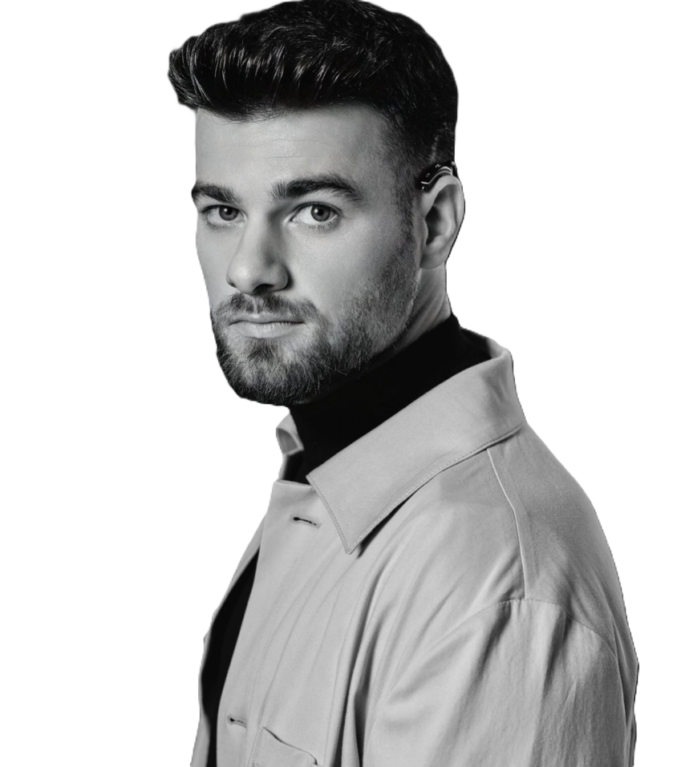

Robin Frings
Robin Frings, acteur, content creator en bekend van NPO Zappelin, Alleskunner VIPS en Buenas Chicas.
@robinfrings
@robinfrings1

In 3,5 jaar heeft Robin veel bereikt door hard te werken en zijn talent. Hij krijgt elke week ongeveer 150 nieuwe volgers op Instagram. Dit laat zien dat hij steeds bekender wordt op internet.
15k+
Tiktok volgers
25k+
Instagram volgers
770.239
Gemiddelde weergaven per maand